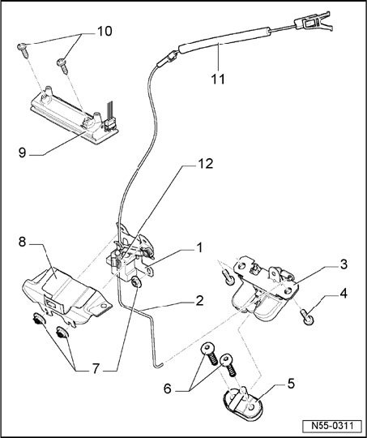

Locking And Unlocking Components - Assembly Overview
Locking And Unlocking Components - Assembly Overview

1 - Carrier piece
- With actuator lever for emergency release lever and Rear Lid Unlock Motor -V139-.
2 - Operating rod
- From lid lock to actuator lever for emergency release lever.
3 - Hood lock
4 - Screw
- Qty. 2
- 25 Nm
5 - Striker pin
- Also with closing assist.
6 - Screw
- Qty. 2
- 25 Nm
7 - Hex nut
- Qty. 3
- 8 Nm
8 - Anti-theft protection
9 - Grip
- For vehicles with spare wheel mounting on rear lid
10 - Screw
- Qty. 2
- 4.5 Nm
11 - Release
- For emergency release lever.
12 - Motor to unlock rear lid